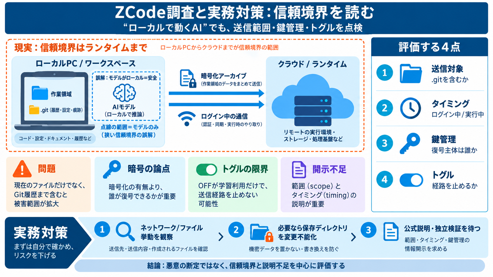

ZCode | Chinese AI Tools
Checked on August 14, 2026. GLM-5.3 is available in ZCode; the advertised 1.5x quota boost is temporary through August 3…

「ローカルで動くはずのAI」でも、ログイン中のランタイムが作業環境をクラウドへ送っている可能性があります。 何が問題で、どう点検・対策するかを短く整理します。
「推論だけローカルだから安心」と思っても、デスクトップアプリや認証・更新・アップロード部分がクラウドと通信するなら別問題です。 信頼境界はモデルの外側まで広がります（runtimeランタイム）。
ここでのポイントは「暗号化されているか」だけでなく、「何を・いつ・どれだけ送るか」です。
「現在のファイル」だけでなく履歴まで含むと、漏えい時の被害範囲が広がります。
安全性は「暗号の有無」よりも「誰が復号できるか」で大きく変わります。
重要なのはトグル名ではなく、「何をどこへ送る経路があるか」です。
重み（モデル）がオープンでも、デスクトップ側の“ハーネス/サイドカー”がログイン中にデータを送るなら、信頼はその外側に移ります。 Trust boundary信頼境界は“計算場所”だけでは決まりません。
ただし機能（例：リワインド/ロールバック）と引き換えになる可能性があります。
さらにユーザーが復号できない場合、実態把握（検証）が難しくなります。
望ましい態度は「悪意の断定」より、信頼境界と開示不足を中心課題として評価することです。
Trust信頼は「誰が運用し、何を観測できるか」で決まります。
“ローカルAI”の安心感を前提にせず、ログイン状態での送信範囲（特に.git）、鍵の所在、トグルの効き方まで見て判断してください。 必要ならシステムレベルの回避策も検討し、公式説明や独立検証を待つ姿勢が現実的です。
Checked on August 14, 2026. GLM-5.3 is available in ZCode; the advertised 1.5x quota boost is temporary through August 3…
Zcode · Z.AI Agentic IDE # Zcode: Z.AI's GLM-Powered Agentic Coding IDE Zcode’s agentic IDE, powered by GLM-5.3 Zcode…
The company has had a turbulent but high-profile run. In January 2025, the U.S. Commerce Department added the company to…
The launch promotion is pointed at usage economics. Z.ai's ZCode documentation says GLM Coding Plan subscribers get a ro…
ZCode isn’t another terminal agent like Claude Code or Codex CLI. It’s a full desktop app for Windows, macOS, and Linux …